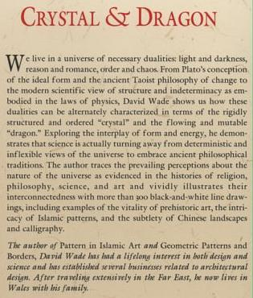

|
Finite Geometry Notes
|
Crystal and Dragon
The Discrete and Continuous
Faces of
Diamond Theory
by Steven H. Cullinane
on August 27, 2003
The title is from a 1993 book by David Wade:

|
Some notes on these concepts in my own work: Crystal: See the Diamond 16 Puzzle for an introduction to the discrete aspects of diamond theory. Dragon: Underlying the symmetry of the patterns in the Diamond 16 Puzzle is another, hidden, set of patterns known as Walsh functions. From the Bulletin of the American Mathematical Society, April 1992 — W. R. Wade, in a review of Walsh Series and Transforms, by Golubov et. al.: |
|
For a mathematical "dragon" and its relationship to Walsh functions, see the following: "A 2D Haar Wavelet" in "A Lecture on Harmonic
Analysis" "
Twin-Dragon
Applet" demonstrating Haar wavelets "
Mathematical
Background" for the Twin-Dragon Applet "Nonseparable
Walsh-type Functions on Rd" "Walsh
Functions" and the Haar basis, "Ten
Books on Wavelets,"
See, too, the cover article on wavelets in the September 2003 Notices of the American Mathematical Society. The trigonometric functions, the basis of traditional harmonic analysis, are often called "the circular functions." Diamond theory shows that the analogous Walsh functions might well be called "the square functions." See my note, Symmetry of Walsh Functions. Continuous functions, the realm of Wade's "dragon," are therefore, as the above remarks show, not wholly unrelated to the discrete mathematics of the square, which plays a central role in combinatorics, finite geometry, and the theory of finite groups.... the realm of Wade's "crystal." |